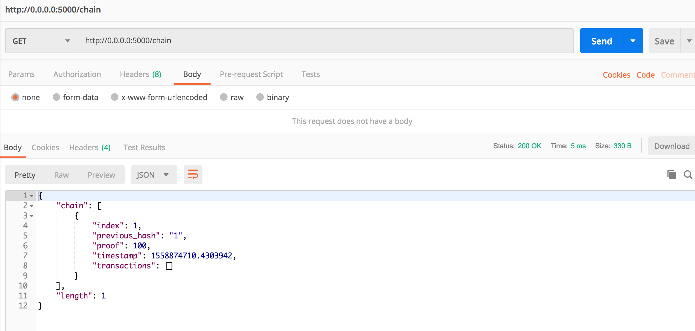
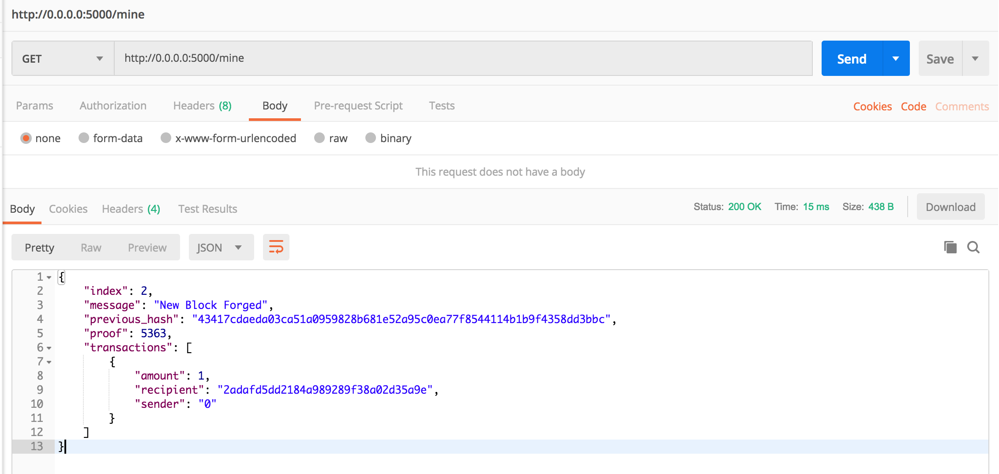
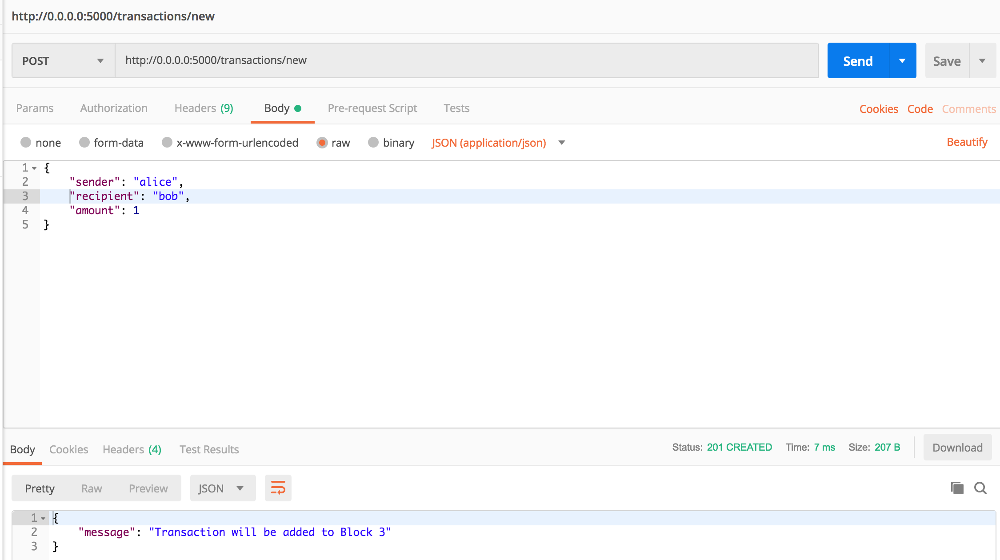

这是一个使用 Python3 + flask 写的简单平台，主要目的是体验区块链的场景。
项目库：https://github.com/dvf/blockchain
一、实验目标
- 熟悉区块数据结构，了解哈希算法；
- 简单了解哈希碰撞(挖矿)的流程，并对发起新交易流程有所了解；
- 熟悉区块链的不可篡改性、顺序性，以及区块链分叉时的场景。
二、实验基础
本实验涉及到以下必要知识点：
- 掌握Python语言知识点，熟悉Python程序构建方法，了解flask web框架；
- 熟练使用 *nix系统，熟悉命令行操作（Windows也可）；
- 掌握HTTP协议，熟悉状态返回值的含义；
- 会使用普通IDE，会使用Postman等工具测试API。
三、实验步骤
1. 实验环境依赖
Git
python version >= 3.6
flask == 0.12.2
requests == 2.18.4
2. 实验环境搭建
PS：在这里的命令行操作主要面向 *nix 系统。
1 | 在适当的目录下拉取库 |
另：可使用Docker标准环境搭建，可供不希望更改python环境的用户使用。
(注意 这是另外一种实验环境搭建方法，上面做完可不做这一步)
Docker桌面工具下载地址：Docker Desktop for Mac and Windows
命令行下载(面向Ubuntu) ：Get Docker CE for Ubuntu
1 | 在适当的目录下拉取库 |
3. 与区块链进行交互
实验很简单，使用API工具对服务器发起HTTP请求，也可以使用古老的cURL来替代Postman工具访问API。
API总共5中方法：
/chain：返回当前区块链表/mine：进行挖矿，生产一个区块/transactions/new：产生一笔新交易/nodes/register：节点注册，将多个节点绑定到一起/nodes/resolve：区块链同步
1). /chain 方法测试
使用Postman 发送GET方法HTTP请求

1 | cURL方式访问 |
可以看到区块链的结构如下：
1 | { |
创世块的index为1，transactions内不包含交易。
2). /mine 方法测试
使用Postman 发送GET方法HTTP请求

1 | cURL方式访问 |
可以看到服务器将交易池的所有交易打包产生了一个新的区块index2，并计算了前一块的哈希值。
若交易池内没有交易，系统默认产生sender为0的交易，方便演示 :)
这时，再调用/chain方法，查看返回的记录，有什么变化？测试previous_has是否就是前一块的哈希。
3). /transactions/new方法测试
使用Postman 发送POST方法HTTP请求，这里需要使用JSON格式写入body。

如上图所示，alice向bob发出数量为1的交易。
1 | cURL方式访问 |
这笔交易将会发到交易池，等待矿工将它打包到区块里。
这时，再调用/mine方法，查看返回的记录，有什么变化？
4). /nodes/register方法测试
在这里，需要两个以上服务端，即两个以上终端进行操作。
注意：这里分为两种情况，使用pipenv配置的环境，使用Docker配置的环境，请按已有的环境登记节点。
使用pipenv配置的环境
1 | 在代码根目录内，重新起一个服务，注意端口要设置成不一样 |
使用Postman 发送POST方法的HTTP请求，这里需要填入JSON格式写入body。
注意：这里填入的node是你新起的服务端口，可以有一个，可以有多个

1 | cURL方式访问 |
在 http://0.0.0.0:5001 的服务节点也要用/nodes/register方法把端口5000的服务节点加进去，数据就可以互通。
使用Docker配置的环境
1 | 重起一个新的节点 |
在登记节点时，需要知道本机的本地ip(local IP)，在这里假设本地IP是196.128.0.1
1 | cURL方式访问 |
同样的，在81端口也需要登记80端口的服务。
5). /nodes/resolve方法测试
在刚才起的新服务节点5001端口(端口号因人而异)，调用/chain方法：
1 | curl -X GET "http://localhost:5001/chain" |
可以看到，还是空的，只有1个区块。
这时调用/nodes/resolve方法与登记好节点的区块链进行同步拉取。
例如，5000端口现在的区块链如下：
1 | curl -X GET "http://localhost:5000/chain" |
现在调用5001端口的/nodes/resolve方法进行同步：
1 | curl -X GET "http://0.0.0.0:5001/nodes/resolve" |
可以看到，5001端的区块链已经完全和5000端的同步了。
4. 处理区块链分叉
此时，5000和5001两个节点的区块链都是完全一致的。若在5000端和5001端同时进行一次交易，那么会出现什么结果呢？两个节点的链长是一样的，最后是谁同步谁的？
1 | 在5000端，alice给bob发10块 |
此时，在5000端调用/nodes/resolve方法将不会和5001端的同步，反之也是。
当两个节点之中，有一个节点先于另一个节点出块，那么另一个节点将会遵从先出快节点的区块链。Have a try :)
5. 修改哈希碰撞难度
修改哈希碰撞难度，可有效降低出块的时间。
在blockchain.py文件 178行：
1 | def valid_proof(last_proof, proof, last_hash): |